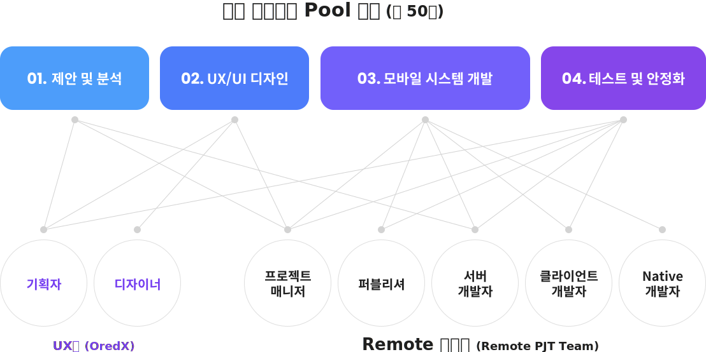

모바일 고객 상담 서비스
모빌씨앤씨의 고객 지원 전문가 그룹은 전용 콜센터를 통해 어플리케이션 사용자 문의 실시간 대응 서비스를 제공합니다.접수한 문의 중 실시간 문의 대응이 어려운 건은 SM 운영 전문가 그룹과 협의하여 서비스 개선의 중요 정보로 사용합니다.
01
모바일 사용자 채널역할
현장 사용자 그룹을 위한 모바일 상담채널을 제공하여 현장에서 발생되는 문의사항에 대한 1차 대응
02
운영그룹 및 고객사 채널역할
현장 문의사항에 대한 1차 대응 후 추가 대응이 필요할 경우 시스템 운영담당 또는 고객사 정책담당을 통한 2차 대응
03
서비스 개선항목 발굴
현장 접수내용을 기반으로 시스템, 업무개선 아이디어에 대한 리포트 진행
04
월간 고객상담 리포트
고객상담센터 시스템에 접수된 상담결과 (상담 접수건수, 포기건수, 대응건수, 주요문의 사항,개선 요청사항, 해피콜 대응건수 등) 리포트
05
시스템 기반 서비스 제공
고객상담 시스템을 이용한 자동 콜 분배, 상담, 조치내용 등록 진행

OREDX GROUP은 4DS 방법론에 따라 UX 업무 프로세스를 수행합니다.
DISCOVER
문제적 탐색
- 프로젝트 Brief
- Desk Research
- Field Research
- 요구사항 분석
- Stakeholder 인터뷰
DEFINE
문제점 정의
- 문제정의
- 시장 & 트랜드 분석
- 경쟁사분석
- 기존 UX분석
- Target User 분석
- UX개선 목표 수립
DEVELOP
솔루션 구체화
- 신규 Ideation
- UX Concept, 전략도출
- Function Define
- IA 설계
- Key Screen Define
- Wireframe & Prototype
- GUI Concept Design
- 사용성 테스트(UT)
DELIVER
솔루션 전달
- 사용자 경험 개선
- 솔루션 전달
01
Conceptualization
User Research를 통해 다양한 이해관계자 사이의 관계와 상황을 이해합니다.
각자의 요구사항을 파악하고 이를 이어
줄 수 있는 접점을 찾습니다. 우리는 주어진 상황에 따라 다양한 UX기법들을 활용하여 사용자를 더욱 심도 있게 이해하려 노력합니다.
02
UX Strategy & UI Design
사용자에 대한 이해를 바탕으로 UX전략을 도출합니다. 표면적으로 드러난 니즈 외에 리서치를 통해 발견한 인사이트를 가공하여 사용자의 숨겨진 니즈도 빠짐없이 서비스에 적용합니다. 이렇게 모인 정보를 체계적으로 구조화 하고, 서비스의 앞면과 뒷면까지 충분히 고려하며 UI를 설계합니다.
03
User Scenario on Wireframe
서비스의 맥락에 알맞는 유저 시나리오를 구성하고 필요에 따라 프로토타이핑을 진행합니다. 이러한 과정을 통해 주요 사용자가 원하는 경험을 잘 반영해서 UI를 설계했는지 확인할 수 있습니다. 효과적인 의사 소통을 위한 과정이자, 수정보완을 반복 하며 서비스를 구체화시키는 단계입니다.
04
Interaction Design & GUI Design
우리는 다수의 프로젝트 경험을 바탕으로 폭 넓은 사용자와 상황에 대응할 수 있는 Visualization 능력을 가지고 있습니다. 시각적 디자인 관점에서 주 사용자의 특성 및 생활 양식을 고려하여 시각화 작업을 수행합니다. 다각도로 고려된 디자인은 사용자에게 심리스한 경험을 선사합니다.
모바일 시스템 통합 운영 사업
모바일 시스템의 성공적인 구축도 중요하지만, 구축 후 안정적 운영 및 컨텐츠 확장을 통한 사용의 연속성을 제공하는 것이 더욱 중요 합니다. 자체 모바일 전문 운영인력 POOL 을 기반으로 고객별 전담채널을 제공하여 시스템 오픈 후 발생되는 내부, 외부 환경변화에 실시간으로 대응 합니다.
Native Care Service (NCS)
Native Care Service는 전문 네이티브 기술자로 구성 되어있는 모빌씨앤씨의 네이티브팀이 제공해드리는 서비스이며,모빌씨앤씨가 납품하지 않았더라도 고객사의 모바일서비스에 대한 네이티브 관련 기술을 문의하거나 네이티브 수정개발을 의뢰/ 지원 받을 수 있는 오픈형 네이티브 기술지원 창구입니다.
01
프로젝트 비용절감
합리적인 비용책정에 따른 iOS,AOS 전문인력 채용 및 용역 활용 비용절감
02
히스토리 & 버전관리
개발완료 후에도 소스 버전관리를 제공하여 추가 수정 및 업데이트 가능
03
특정 기능 단위 개발
GPS, 카메라, 블루투스, 외부 라이브러리 연동 등 특정 기능 단위 개발이 가능
04
비 대면 1:1 요청 관리 시스템
고객, 개발자, 매니저 간 소통 및 개발 현황 관리가 가능한 NCS 웹사이트 제공
05
정직원 기반의 개발인력 POOL
첵임감과 경험을 갖춘 강력한 팀워크 기반의 네이티브 전문인력 배치
06
국내외 대형 CLIENT 개발 경험
다년간의 모바일 시스템 개발, 운영 노하우를 통한 다양한 개발 상황에 대처 가능
모빌씨앤씨 UX 전문가 그룹, OREDX에서
사용자 경험을 개선한 사례가 궁금하신가요?
모바일 시스템 구축 사업
모빌씨앤씨의 SI 구축 전문가 그룹은 자체 프로젝트 수행 프로세스를 통해 제안 > 고객 요구사항 분석 > UX/UI 디자인 > 퍼블리싱/클라이언트/서버 개발 과정과 함께 테스트 및 안정화 후 서비스 오픈까지 One-Stop 시스템 통합 구축 서비스를 제공합니다.모바일 시스템 원격 구축 사업
언택트/비대면 서비스의 전환 및 가속화로 빠르게 확산되고 있는 비대면 프로젝트 수행을 위해 체계적인 원격 프로젝트 구축 서비스도 제공하고 있습니다. 모바일 SI구축 서비스를 비대면 원격 프로젝트로 수행하기 위해 자사 개발인력 Pool를 활용하며, 합리적이고 효율적인 프로세스를 수립하여 최적의 구축 서비스를 제공합니다.
원격구축의
장점
모빌씨앤씨 원격프로젝트 진행 건 수는 해마다 4배 이상 증가하고 있으며, 한번 원격프로젝트를 경험하신 대부분의 고객분들은 높은 만족도를 가지고 추가
원격 구축 건을 이어 문의 주셨습니다. 모빌씨앤씨는 체계적인 원격 프로젝트 프로세스 및 방법론을 통해 고객의 니즈를 최대한 만족시키고 안정적인 프로젝트를 수행하여 고객이 원하는 결과물을
기간내에 전달해 드립니다.
| 고객니즈 | 솔루션 | |
|---|---|---|
| 비용 | 사업예산을 고려하여 프로젝트 비용을 줄이고 싶어요. |
|
| 기간 | 어플리케이션 런칭을 탄력적으로 대응하고 싶어요 |
|
| 협업 | 디자인, Native 등 비상주 팀과 소통이 원활했으면 해요. |
 HDC 아이콘트롤스
HDC 아이콘트롤스
ADT캡스
서울도시가스
 교원 에듀
교원 에듀
SK C&C
 아모스
아모스
ADT캡스
 롯데
롯데